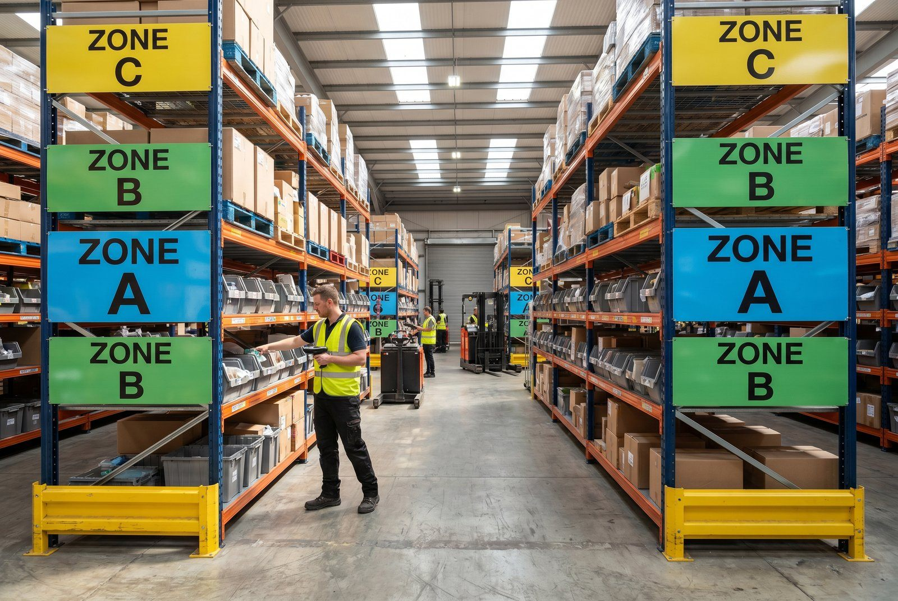

Du har 800 aktive SKU'er. 20 af dem sender du 200 gange om måneden. 400 af dem sender du færre end 2 gange om måneden. Behandler du alle 800 ens - samme hyldeplads, samme opmærksomhed, samme genbestillingslogik - spilder du tid og penge på varer der ikke fortjener det, og underservicerer dem der gør.
Kort svar
👉 Vil du se det i praksis? Kontakt SmartPack
ABC-analyse opdeler dit sortiment i tre grupper baseret på omsaetnings- eller ordrebidrag: A (top 20% varer = 80% af ordrer), B (næste 30% = 15% af ordrer), C (de resterende 50% = 5% af ordrer). Indsæt placeringer, genbestilling og opmærksomhed baseret på det.Pareto på lageret
Pareto-princippet (80/20-reglen) gælder næsten universelt på lager:- De 20% hurtigst sælgende varer repræsenterer 75-85% af ordrerne
- De 50% lavest sælgende varer repræsenterer kun 5-8% af ordrerne
- Men de 50% C-varer fylder ofte 40-60% af lagerarealent
Konklusion: du betaler mest for det der bidrager mindst.
Sådan laver du din ABC-analyse
Trin 1: Exportér ordrevolumen per SKU de seneste 90 dage Brug din webshop-backend eller WMS. Du skal bruge: SKU, antal ordrer der inkluderede varen. Trin 2: Sorter efter antal ordrer (højest først) Trin 3: Beregn kumulativ procentandel- Oplæg SKU'er en for en, læg ordrer samen
- Når den kumulative sum rammer 80% af totale ordrer: alt der kom før er A-varer
- Næste 15% af ordrer: B-varer
- Sidst 5%: C-varer
Trin 4: Tildel placering
- A-varer: tættest på pakkebordet, øjdehøjde, let tilgængelige
- B-varer: længere væk, men særskilt zone
- C-varer: kælder, øverste hylder, bageste del af lageret
Hvad det sparer
| Scenarie | Uden ABC | Med ABC |
| Gangtid per A-vaare pluk | 4 min (spredt lager) | 1,5 min (tæt på pakkebord) |
| Daglig gangtid (200 A-pluk/dag) | 800 min | 300 min |
| Sparet tid | 500 min/dag = 8,3 timer | |
| Kr./dag (250 kr./time) | 2.083 kr./dag | |
| Kr./år | ~520.000 kr./år |
Dette er konservativt. Mange lagre har højere gangtid og højere lønrate.
Vedligeholdelse: Når A-varer skifter
ABC-analysen er ikke statisk. Sæsonvarer skifter kategori. Nye produkter kommer ind. Kjør analysen:- På kvartalsbasis for sæsonbetonet sortiment
- En gang årligt for stabilt sortiment
- Efter Black Friday / jule-svinget